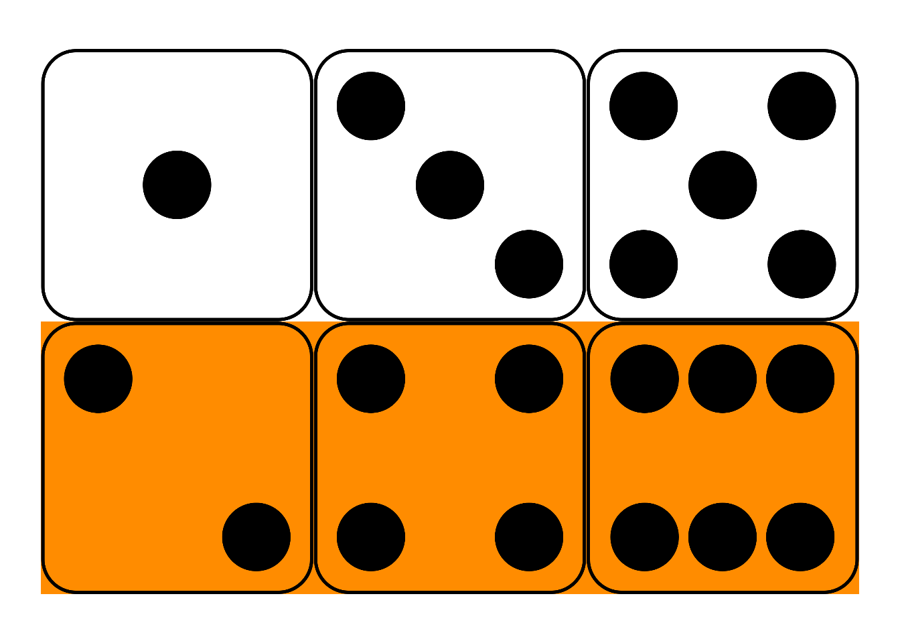
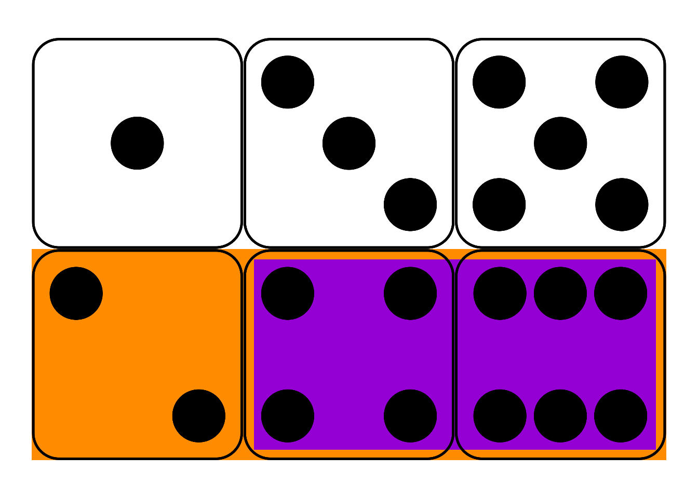
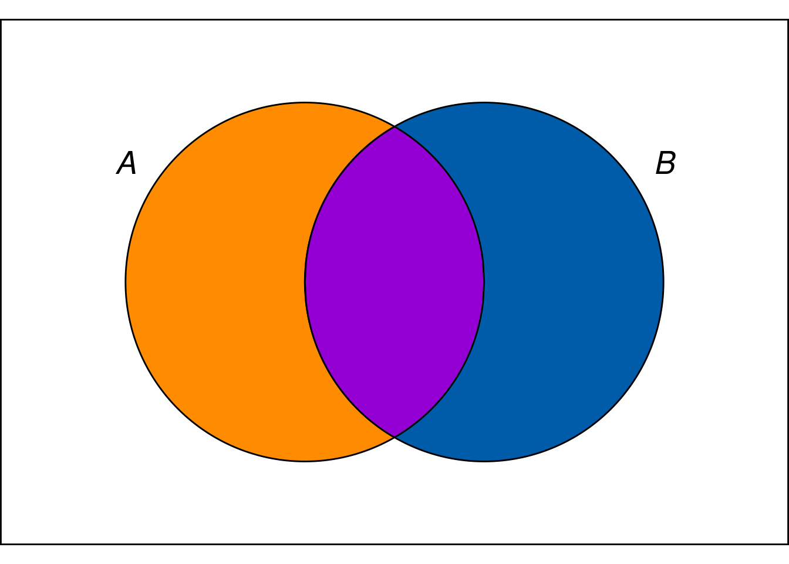

Assuming you have a driver’s licence and the roads are relatively clear, the chances of crashing your car are pretty low. But if you’re drink, the chances of crash are much higher. Probabilities change depending on the conditions.
We already have notation for symbolize this idea. We use \(P(A | B)\) to represent the probability that \(A\) is true given that \(B\) is true. For example, to say the probability of \(A\) given \(B\) is 30%, we write: \[ P(A | B) = .3 \] When we condition probabilities in this way, we call them conditional probabilities. Conditional probabilities play a central role in the remaining material, so let’s spend some time learning how to calculate them.
 Figure 10.1: Conditional probability in a fair die roll
Suppose I roll a fair, six-sided die behind a screen. You can’t see the result, but I tell you it’s an even number. What’s the probability it’s also a “high” number: either a \(4\), \(5\), or \(6\)?
Maybe you figured the correct answer: \(2/3\). But why is that correct? Because, out of the three even numbers (\(2\), \(4\), and \(6\)), two of them are high (\(4\) and \(6\)). And since the die is fair, we expect it to land on a high number \(2/3\) of the times it lands on an even number.
This hints at a formula for \(P(A | B)\).
\[ P(A | B) = \frac{P(A \wedge B)}{P(B)}. \]
In the die-roll example, we considered how many of the \(B\) possibilities were also \(A\) possibilities. Which means we divided \(P(A \wedge B)\) by \(P(B)\).
In fact, this formula is our official definition for the concept of conditional probability. When we write the sequence of symbols \(P(A | B)\), it’s really just shorthand for the fraction \(P(A \wedge B) / P(B)\).
 Figure 10.2: Conditional probability is the size of the \(A \wedge B\) region compared to the entire \(B\) region.
In terms of an Euler diagram (Figure 10.2), the definition of conditional probability compares the size of the purple \(A \wedge B\) region to the size of the whole \(B\) region, purple and blue together. If you don’t mind getting a little colourful with your algebra: \[ P(A | B) = \frac{\color{bookpurple}{\blacksquare}}{\color{bookpurple}{\blacksquare} + \color{bookblue}{\blacksquare}}. \] So the definition works because, informally speaking, \(P(A \wedge B)/P(B)\) is the proportion of the \(B\) outcomes that are also \(A\) outcomes.
Dividing by zero is a common pitfall with conditional probability. Notice how the definition of \(P(A | B)\) depends on \(P(B)\) being larger than zero. If \(P(B) = 0\), then the formula The comedian Steven Wright once quipped that “black holes are where God divided by zero.” \[ P(A | B) = \frac{P(A \wedge B)}{P(B)} \] doesn’t even make any sense. There is no number that results from the division on the right hand side.83 There are alternative mathematical systems of probability, where conditional probability is defined differently to avoid this problem. But in this book we’ll stick to the standard system. In this system, there’s just no such thing as “the probability of \(A\) given \(B\)” when \(B\) has zero probability.
In such cases we say that \(P(A | B)\) is undefined. It’s not zero, or some special number. It just isn’t a number.